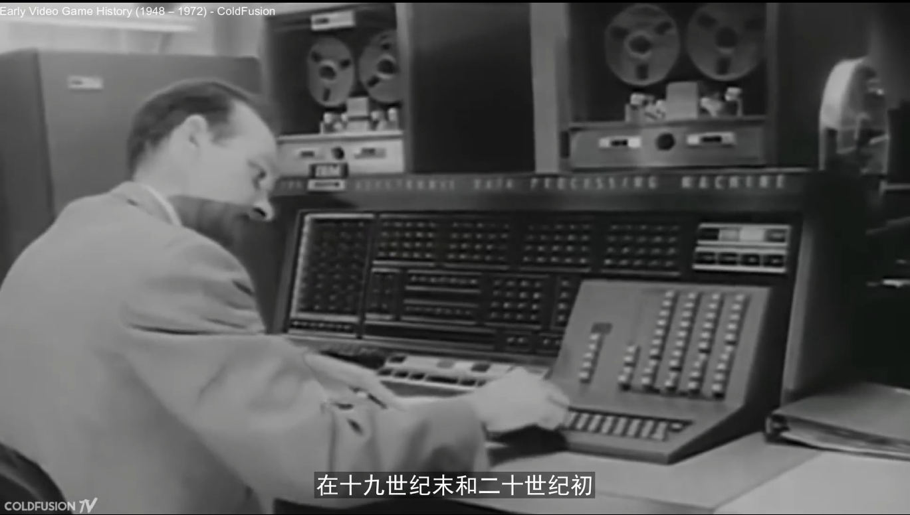

Unity Developers' "Cheat Mode" Ongoing
Verified Unity course series: a comprehensive case-based tutorial for GPT accelerated full-stack game production
2023 - , Associated with: Unity Technologies.
Background, Problem, Rationale
The moment since OpenAI ignited the nuclear bomb in 2021 - the mighty ChatGPT, the voices calling for a new industrial revolution have never been diminished. However, doubts and concerns were also raised along with the booming of prompt-related services and industries. Neglecting grand discussion topics like ethical concern, jobs, and security, barely from a very primitive vision and pure standing of a game guy, the most urging but simple question I may ask is, "Are we really there yet?"
The response may sound a little disappointing: the current AI (especially generative-AI, aka, AIGC) is intelligent , but not intelligent enough. AIGC tools like ChatGPT and MidJourney are excellent at carrying out solutions in task scope, but yet not project. An example is that you can ask GPT to "write an A* path finding for enemies", "procedural world generation using wave collapse algorithm", "create an inventory and codes for its UI", etc., but you are not able to tell GPT to "give me a game like Minecraft" without proper steps of instruction (prompt engineering).
Attempts and efforts have been made to push the boundaries of what generative AI can achieve. Initiatives like Auto-GPT have been striving to automate more complex tasks. However, despite these efforts, the results are often still suboptimal. Utilizing GPT APIs can enhance the capabilities, but the dream of having an AI that can understand and execute a project from a simple prompt is still far from reality. Particularly, for game production project, the process often involves a myriad of procedures and steps, from early planning, conceptualization, design to prototyping, then to publishing and maintenance. For now, a simple set of prompts based on designer and developer's intuition is not sufficient to encapsulate the complexity of creating a game. A comprehensive guide that details the full production process is essential to navigate through the intricate steps of pushing the game ideas to reality.
One day, with the collaboration of computer, cognitive/neuro scientists, we may be able to bridge the gap between human and computer languages, crafting the ultimate Human-Computer Interaction (HCI), where AIs are just working like our regular human colleagues. This would revolutionize not just game development, but every industry that relies on intricate procedures and nuanced understanding. In general, we believe that prompt engineering is a transitional phase and not the end goal.
However, before we finally reach the day, we must continue to explore and learn, which inspires us to introduce this ongoing bridge project focused on a systematic review of feasible prompt engineering general methodologies and a case-based guidebook for not only integrating GPT into production (game ideation, designing, coding, etc.), but also viewing it as a powerful self-learning tool. Unlike tutorials "...20 keywords you have to know...", "...5 ways to write a good prompt for coding...", this project aims to unleash the full potential of the current AI, integrating it into each step of the full workflow of producing a game, especially for indie developers.
The response may sound a little disappointing: the current AI (especially generative-AI, aka, AIGC) is intelligent , but not intelligent enough. AIGC tools like ChatGPT and MidJourney are excellent at carrying out solutions in task scope, but yet not project. An example is that you can ask GPT to "write an A* path finding for enemies", "procedural world generation using wave collapse algorithm", "create an inventory and codes for its UI", etc., but you are not able to tell GPT to "give me a game like Minecraft" without proper steps of instruction (prompt engineering).
Attempts and efforts have been made to push the boundaries of what generative AI can achieve. Initiatives like Auto-GPT have been striving to automate more complex tasks. However, despite these efforts, the results are often still suboptimal. Utilizing GPT APIs can enhance the capabilities, but the dream of having an AI that can understand and execute a project from a simple prompt is still far from reality. Particularly, for game production project, the process often involves a myriad of procedures and steps, from early planning, conceptualization, design to prototyping, then to publishing and maintenance. For now, a simple set of prompts based on designer and developer's intuition is not sufficient to encapsulate the complexity of creating a game. A comprehensive guide that details the full production process is essential to navigate through the intricate steps of pushing the game ideas to reality.
One day, with the collaboration of computer, cognitive/neuro scientists, we may be able to bridge the gap between human and computer languages, crafting the ultimate Human-Computer Interaction (HCI), where AIs are just working like our regular human colleagues. This would revolutionize not just game development, but every industry that relies on intricate procedures and nuanced understanding. In general, we believe that prompt engineering is a transitional phase and not the end goal.
However, before we finally reach the day, we must continue to explore and learn, which inspires us to introduce this ongoing bridge project focused on a systematic review of feasible prompt engineering general methodologies and a case-based guidebook for not only integrating GPT into production (game ideation, designing, coding, etc.), but also viewing it as a powerful self-learning tool. Unlike tutorials "...20 keywords you have to know...", "...5 ways to write a good prompt for coding...", this project aims to unleash the full potential of the current AI, integrating it into each step of the full workflow of producing a game, especially for indie developers.
Course Intro 1.1, in Simplied Chinese
Course Intro 1.2, in Simplied Chinese
A Sketch Shows the Project's Position
Target Audience
Intermediate level game developer; Indie developer; Developer and designer who know prompt but are not expert; Experienced developer and designer who look for efficiency and creativity boost
Course Teaser
(Translated from Chinese)
As the first and most comprehensive online Chinese tutorial series on using ChatGPT to assist with the entire game development process in Unity, this course focuses on teaching you hands-on, practical prompt engineering techniques. These universal methods can be applied throughout the entire game development process in Unity, boosting your game creation efficiency and creativity by 10 times! This applies to any type, any content, and anything at all!
Look beyond appearances to understand the essence, and learn principles through case studies. This course will use a plethora of practical GPT examples and a major in-class project developed with the assistance of GPT in Unity (developing a sandbox open-world game similar to "Minecraft") to explain in detail the extensive and deep applications of generative AI like ChatGPT in the entire Unity game development process, allowing you to shine in your own game projects.
As the first and most comprehensive online Chinese tutorial series on using ChatGPT to assist with the entire game development process in Unity, this course focuses on teaching you hands-on, practical prompt engineering techniques. These universal methods can be applied throughout the entire game development process in Unity, boosting your game creation efficiency and creativity by 10 times! This applies to any type, any content, and anything at all!
Look beyond appearances to understand the essence, and learn principles through case studies. This course will use a plethora of practical GPT examples and a major in-class project developed with the assistance of GPT in Unity (developing a sandbox open-world game similar to "Minecraft") to explain in detail the extensive and deep applications of generative AI like ChatGPT in the entire Unity game development process, allowing you to shine in your own game projects.
Poster 1
Poster 2
Course Content/Outline
Include 6 major instruction chapters, C1-C6, (each include around 5-12 sessions), countless in-session case studies, one class-in full-stack development project (a Minecraft-like sandbox game prototype), and, by the end of the course, a practice section including 3 mini-game assignments.
Outline (translated from Chinese):
Chapter 1: Introduction
- 1.1 Preparatory Work
- 1.2 **Important** Univeral Methodology of Prompts
- 1.3 Introducing In-Class Exercises and Assignments
- 1.4 Disclaimer (legal, copyrights, etc.)
Chapter 2: Planning and Management (Essential for Beginners)
- 2.1 Chapter Intro
- 2.2 Vision and Goals
- 2.3 Project Requirements Analysis
- 2.4 Resource Allocation
- 2.5 **Important** Formulating a Project Plan
- 2.6 Handling Unexpected Events
Chapter 3: Design
- 3.1 Chapter Intro
- 3.2 Game Design Document (GDD)
- 3.3 **Important** Fundamentals of Game Design Theory
- 3.4 **Important** First Step: Prototype Design
- 3.5 Expanding System Elements
- 3.6 Adding New Systems
- 3.7 Number and Game Balance
- 3.8 Aesthetic Decisions
- 3.9 Appendix: UI/UX Design
- 3.10 Appendix: Level Design
- 3.11 Design Iteration
Chapter 4: Development
- 4.1 Chapter Intro
- 4.2 The Love-Hate Relationship between Design and Development
- 4.3 **Important** First Step: Do Some Research - Exploring Development Terminology of Your Target Game
- 4.4 Exploring and Establishing the Development Framework/Workflow Based on Design (Programming)
- 4.5 Modularization of Functions/Mechanisms(Programming)
- 4.6 Drawing the Hierarchy (Programming)
- 4.7 **Important** Prototype Development (Programming)
- 4.8 **Important** Implementation of Mechanisms/Functions (Programming)
- 4.9 Debugging Tools (Programming)
- 4.10 Development Iteration (Programming)
- 4.11 Appendix: Creating/Searching Art Assets (Art)
- 4.12 Appendix: Text Development (Art)
Chapter 5: Promption and Release
- 5.1 Chapter Intro
- 5.2 Promption vs. Release
- 5.3 **Important** Exploring and Formulating Marketing Strategies
- 5.4 Exploring Promotion Channels/Opportunities
- 5.5 **Important** Creation of Promotional Content (Ads)
- 5.6 Preparation of Pitches for Collaboration (with a publisher, influencer, etc.)
- 5.7 Choosing the Release Platform/Region
- 5.8 **Important** Familiarizing the Release Process
- 5.9 **Important** Legal Regulations/Age Ratings of the Chosen Platform/Region
- 5.10 Localization/Multiculturalism
- 5.11 Quality Assurance
- 5.12 Final Checklist for Launch
Chapter 6: Operation and Maintenance
- 6.1 Chapter Intro
- 6.2 **Important** Community Management
- 6.3 **Important** Bug Fixes and Content Optimization
- 6.4 **Important** Content Updates
- 6.5 Operation Generated Data Analysis
- 6.6 Expanding the Market
- 6.7 Appendix: Keeping a healthy Gaming Environment
Chapter 7: Review | Summary | Discussion (Must-Read)
- 7.1 Review: the Standard Prompt Logic/Methodology
- 7.2 Industry-Specific Keywords and Terminologies
- 7.3 Be Agile When Picking Tools
- 7.4 The Potential Shortcomings and Risks
- 7.5 Be a Life-Long Self-Learner
Chapter 8: Post-Course Assignments
- 8.1 Introducing the mini-game assignments
- 8.2 Pac-Man (Difficulty 2/10)
- 8.3 Vampire Survival (Difficulty 5/10)
- 8.4 Soul Knight (Difficulty 7/10)
- 8.5 Appendix: Challenge - Slay the Spire (Difficulty 9/10)
Outline (translated from Chinese):
Chapter 1: Introduction
- 1.1 Preparatory Work
- 1.2 **Important** Univeral Methodology of Prompts
- 1.3 Introducing In-Class Exercises and Assignments
- 1.4 Disclaimer (legal, copyrights, etc.)
Chapter 2: Planning and Management (Essential for Beginners)
- 2.1 Chapter Intro
- 2.2 Vision and Goals
- 2.3 Project Requirements Analysis
- 2.4 Resource Allocation
- 2.5 **Important** Formulating a Project Plan
- 2.6 Handling Unexpected Events
Chapter 3: Design
- 3.1 Chapter Intro
- 3.2 Game Design Document (GDD)
- 3.3 **Important** Fundamentals of Game Design Theory
- 3.4 **Important** First Step: Prototype Design
- 3.5 Expanding System Elements
- 3.6 Adding New Systems
- 3.7 Number and Game Balance
- 3.8 Aesthetic Decisions
- 3.9 Appendix: UI/UX Design
- 3.10 Appendix: Level Design
- 3.11 Design Iteration
Chapter 4: Development
- 4.1 Chapter Intro
- 4.2 The Love-Hate Relationship between Design and Development
- 4.3 **Important** First Step: Do Some Research - Exploring Development Terminology of Your Target Game
- 4.4 Exploring and Establishing the Development Framework/Workflow Based on Design (Programming)
- 4.5 Modularization of Functions/Mechanisms(Programming)
- 4.6 Drawing the Hierarchy (Programming)
- 4.7 **Important** Prototype Development (Programming)
- 4.8 **Important** Implementation of Mechanisms/Functions (Programming)
- 4.9 Debugging Tools (Programming)
- 4.10 Development Iteration (Programming)
- 4.11 Appendix: Creating/Searching Art Assets (Art)
- 4.12 Appendix: Text Development (Art)
Chapter 5: Promption and Release
- 5.1 Chapter Intro
- 5.2 Promption vs. Release
- 5.3 **Important** Exploring and Formulating Marketing Strategies
- 5.4 Exploring Promotion Channels/Opportunities
- 5.5 **Important** Creation of Promotional Content (Ads)
- 5.6 Preparation of Pitches for Collaboration (with a publisher, influencer, etc.)
- 5.7 Choosing the Release Platform/Region
- 5.8 **Important** Familiarizing the Release Process
- 5.9 **Important** Legal Regulations/Age Ratings of the Chosen Platform/Region
- 5.10 Localization/Multiculturalism
- 5.11 Quality Assurance
- 5.12 Final Checklist for Launch
Chapter 6: Operation and Maintenance
- 6.1 Chapter Intro
- 6.2 **Important** Community Management
- 6.3 **Important** Bug Fixes and Content Optimization
- 6.4 **Important** Content Updates
- 6.5 Operation Generated Data Analysis
- 6.6 Expanding the Market
- 6.7 Appendix: Keeping a healthy Gaming Environment
Chapter 7: Review | Summary | Discussion (Must-Read)
- 7.1 Review: the Standard Prompt Logic/Methodology
- 7.2 Industry-Specific Keywords and Terminologies
- 7.3 Be Agile When Picking Tools
- 7.4 The Potential Shortcomings and Risks
- 7.5 Be a Life-Long Self-Learner
Chapter 8: Post-Course Assignments
- 8.1 Introducing the mini-game assignments
- 8.2 Pac-Man (Difficulty 2/10)
- 8.3 Vampire Survival (Difficulty 5/10)
- 8.4 Soul Knight (Difficulty 7/10)
- 8.5 Appendix: Challenge - Slay the Spire (Difficulty 9/10)
Expected Learning Outcomes
Upon completion of this course, participants can expect to:
- Gain an enhanced awareness of the application of generative AI tools, such as ChatGPT, in Unity game development, thereby improving work efficiency and creativity.
- Master the fundamental methodologies and key concepts of Prompt Engineering.
- Learn from a multitude of case studies involving the use of ChatGPT in game development.
- Through interactions with GPT, comprehensively learn, improve, and refine your understanding of game production cycle.
- Develop a habit of continuous self-learning and self-improvement through the use of AI, while grasping its methods and essence.
- By the end of the course, you will have crafted your own game prototype through hands-on exercises, co-developed with GPT, showcasing your newly acquired skills.
- Gain an enhanced awareness of the application of generative AI tools, such as ChatGPT, in Unity game development, thereby improving work efficiency and creativity.
- Master the fundamental methodologies and key concepts of Prompt Engineering.
- Learn from a multitude of case studies involving the use of ChatGPT in game development.
- Through interactions with GPT, comprehensively learn, improve, and refine your understanding of game production cycle.
- Develop a habit of continuous self-learning and self-improvement through the use of AI, while grasping its methods and essence.
- By the end of the course, you will have crafted your own game prototype through hands-on exercises, co-developed with GPT, showcasing your newly acquired skills.
Important Acknowledgments
This course has been initially published to Unity Learn, CN Platform, Oct.7 2023, internally (unlisted for public) only for the "BOOOM Community x Unity" Game Jam Event. It will be re-published as public as early as Nov.11 2023, the Double 11 Festival (Like, Chinese Black Friday)
Since this is an ongoing project, I may not expose more insights such as pricing, paid-to-view contents. Plz respect my and Unity's Copyrights!
My Major Contributions
Well, basically, I make the whole thing, except marking, pricing, and final verification done by other Unity folks.
Highlights


×